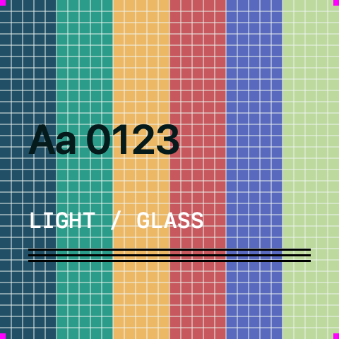

CONTROLLED SAFARI BACKDROP / TIDAL
Aa 0123
Light / Glass
Watch the toolbar change as the content moves beneath it.
This page draws no glass. Every glass control around it belongs to Safari.

CONTROLLED SAFARI BACKDROP / BLOOM
Aa 0123
Light / Glass
Thin grid lines expose refraction. The lettering exposes blur and edge distortion.
CONTROLLED SAFARI BACKDROP / DUSK
Aa 0123
Light / Glass
The same controls, a different field of color.